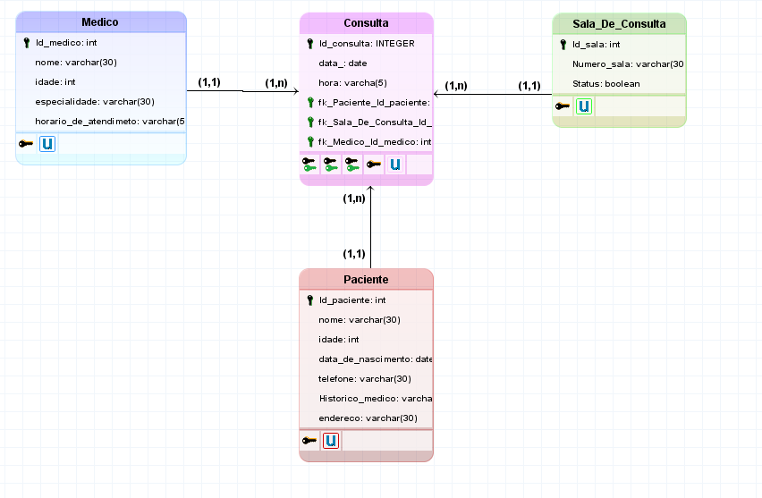

Modelagem De Sistemas:
Segundo Trimestre
Lista de Exercícios - Modelo Lógico

Criamos um miniconto e fizemos um cartaz simulando uma página do Instagram, colocando a legenda no Simple Past.
"Eu não gostei muito da atividade, pois não sou muito bom com trabalhos manuais, porém foi legal aprender um
pouco mais sobre o simple past."
Competências e habilidades: H1 e H2
Link Da Atividade
Modelagem Sistema de Gestão de Consultório Médico

Nessa atividade, aprendemos sobre casos de uso e desenvolvemos um caso de uso no aplicativo Lucidchart.
"Achei legal e fácil essa atividade."
Competências e habilidades: H1, H2
Link Da
Atividade
Pesquisa Normalização de dados
Nessa atividade, aprendemos sobre casos de uso e desenvolvemos um caso de uso no aplicativo Lucidchart.
"Achei legal e fácil essa atividade."
Competências e habilidades: H3
Link Da
Atividade